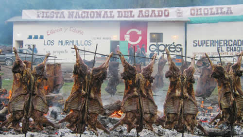
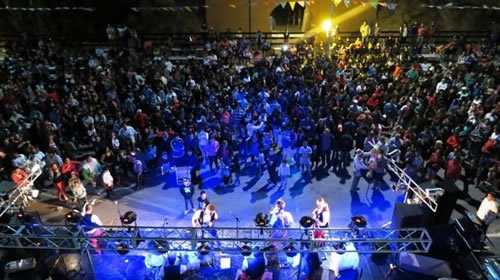
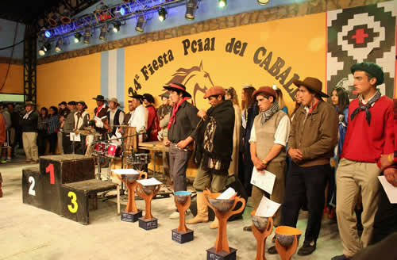

Real Chubut - Agencia de Noticias

Comienza un febrero cargado de fiestas en Chubut

Este fin de semana tendrán lugar la Fiesta Nacional de Asado; la Fiesta Provincial del Caballo; la Fiesta del Langostino, la Fiesta Aniversario de Gastre y los Carnavales de Dolavon
Espectáculos al aire libre, destrezas criollas, música y platos típicos regionales, se podrán disfrutar a lo largo del mes de febrero en las Fiestas Populares de Chubut. Este fin de semana continuará el calendario previsto para el 2017 con el desarrollo de 4 fiestas y el inicio de los Carnavales de Dolavon.
Del viernes 3 al domingo 5 tendrán lugar la Fiesta Nacional del Asado, en Cholila; y la Fiesta Provincial del Caballo, en Gobernador Costa. El sábado 4 se realizará la Fiesta del Langostino, en el puerto de Rawson; y comenzarán los tradicionales Carnavales de Dolavon, que este año se extenderán hasta el 11 de marzo.
Las actividades en la localidad valletana comenzarán alrededor de las 19 horas, con la apertura de la feria de artesanos y los stands gastronómicos. Posteriormente se iniciará el desfile de las carrozas y comparsas; y culminarán con la presentación de los shows musicales.
FIESTA ANIVERSARIO EN GASTRE

Además, este sábado y domingo se realizará la Fiesta Aniversario de Gastre, que fuera postergada la semana pasada por sus organizadores.
A las 11 se realizará el acto de apertura en el gimnasio comunal; a las 13 se degustará de un asado popular y a partir de las 14 comenzará la gran jineteada de basto con encimera y crina limpia en el campo de doma con las tropillas La Rosita de Joaquín; La Mate amargo de Enrique; y la Flor de Pago de Vicente. La animación estará a cargo de Juan Collio y el payador será Huenullio.
Por la noche tendrá lugar el baile familiar con la actuación del grupo local "Nuevo Intento", y en ese marco se realizará la elección de la Reina.
El domingo, durante todo el día, habrá carreras cuadreras; desafíos; pollas; y carreras de resistencia.
FIESTA NACIONAL DEL ASADO
En Cholila, del 3 al 5 de febrero, tendrá lugar la Fiesta Nacional del Asado, en la cual se rinde homenaje a la tradicional comida de nuestro país. En el predio El Morro se concentrarán las actividades principales de la fiesta, que este año ofrecerá a los miles de visitantes que asisten al evento, alrededor de 27 mil kilos de asado para su degustación. Unos 800 corderos; 80 novillos, 4 vaquillonas con cuero y 800 kilos de chorizos serán cocinados en el fogón por expertos asadores de la región.
Asimismo, en esta edición se presentarán en el escenario un importante número de artistas regionales y nacionales, entre ellos "Los Izquierdos de la Cueva" y "La Banda al Rojo Vivo". Las carreras de caballos, jineteadas y destrezas criollas también serán parte de esta fiesta que cuenta, además, de diversas actividades para la familia.
A todo ello, Lotería del Chubut se sumará también a los festejos con el sorteo del Telebingo Extraordinario, que pondrá en juego más de un millón y medio en premios.
El viernes a partir de las 17 horas comenzarán los shows artísticos y que tendrán como protagonistas a un circo criollo; malabaristas; grupos de danzas y ballets; conjuntos musicales y solistas de la zona. Las actividades se extenderán hasta la madrugada con la presentación de Los Entrerrianos de Isondú y de Leonardo Miranda.
El sábado desde las 12 habrá presentaciones de músicos de folklore y chamamé; payadores; ballet; danzas; y a las 20:30 está previsto el acto oficial de inauguración de la fiesta. A continuación se presentarán los números con Bodanny, que ofrecerá un tributo a Soda Stereo; los Quilla Huasi; el "Negro" Ferreyra; y Luis Sebastián.
En tanto, el domingo comenzará con múltiples actividades; a las 20 se harán entrega de menciones y presentes; a las 21 se realizará el sorteo del Telebingo Extraordinario; la presentación de "Los Izquierdos de la Cueva" y alrededor de la medianoche, el cierre de los festejos con la música de la Banda Al Rojo Vivo.
FIESTA PROVINCIAL DEL CABALLO

En Gobernador Costa, del 3 al 5 de febrero, se viven tres días a pura tradición para festejar con jineteadas e importantes artistas regionales y nacionales. Los visitantes pueden disfrutar de la destreza de los jinetes, como así también tomar conocimiento de actividades realizadas por el trabajador rural mediante exhibiciones, además de contar con diferentes actividades culturales y exquisita gastronomía tradicional.
El inicio de las actividades tendrá lugar el viernes 3, a partir de las 9 horas en el Campo de Doma "Julio García", donde se llevarán a cabo la jineteada de petisos, desafío de crinas, el ordeñe de la vaca arisca y destrezas criollas. Y a partir de las 21 comenzará La Gran Noche de Folklore en el Gimnasio Municipal, con la participación de payadores; acordeonistas; grupos de danzas, artistas locales, provinciales y nacionales. Entre otros, se subirán al escenario Juan Amaya; los ballets "Viento Sureño", "Alen" y "Camaruco"; los grupos "La Juerga" y "Las Valijas".
El sábado por la mañana tiene lugar el Desfile Gaucho, el cual cuenta con la presencia de 600 caballos aproximadamente, con agrupaciones tradicionalistas de establecimientos ganaderos de la zona y de diferentes lugares de la Provincia.
Al mediodía se realizará el acto oficial y a continuación comenzarán las rondas de Gurupa Sureña y de bastos con encimera. A las 20 tendrá lugar la apertura de la "Noche Costense" con la actuación del grupo juvenil de acordeón, de Santa Cruz; del grupo local "Estilo Sur"; grupo "La Callejera"; los "Reyes de la Cumbia"; el humor a cargo de "Los cumpas". A la medianoche se elige la Reina de la fiesta y el cierre será con un gran baile familiar.
El domingo desde las 10:30, se realizará el desafío de tropillas, y posteriormente se podrá degustar de un almuerzo criollo. A partir de las 14 comenzarán las montas especiales femeninas; las finales de Gurupa Sureña y de bastos con encimera; la entrega de premios y la presentación de Mario Guajardo y su acordeón. A las 21:30 tendrá lugar el Bingo, con 100.000 pesos en premios; y en el cierre el grupo chileno "Tukas del Sur".